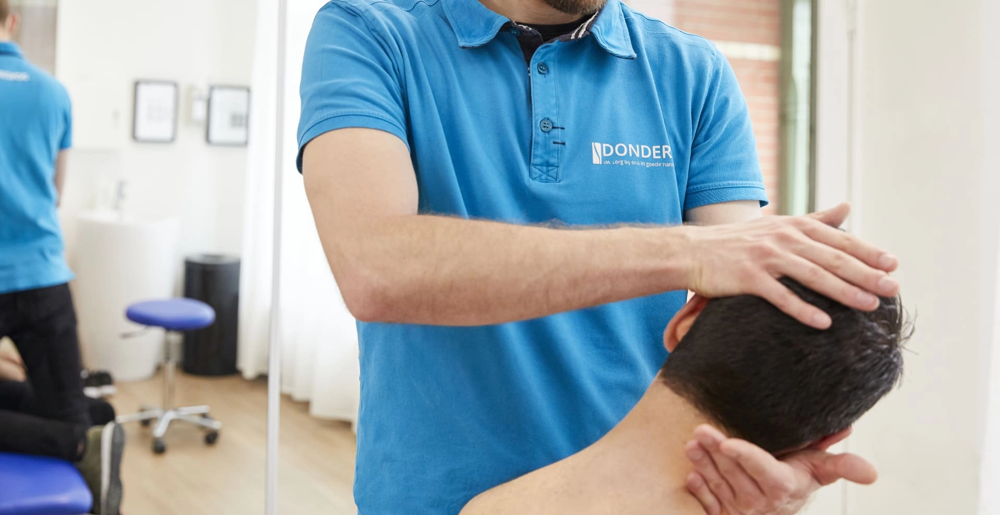
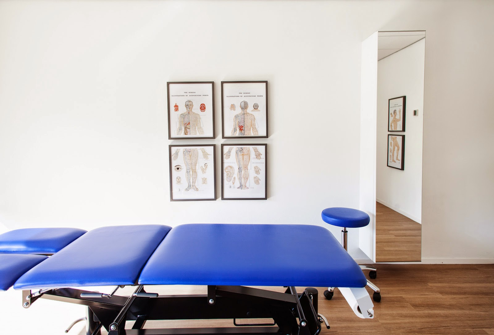
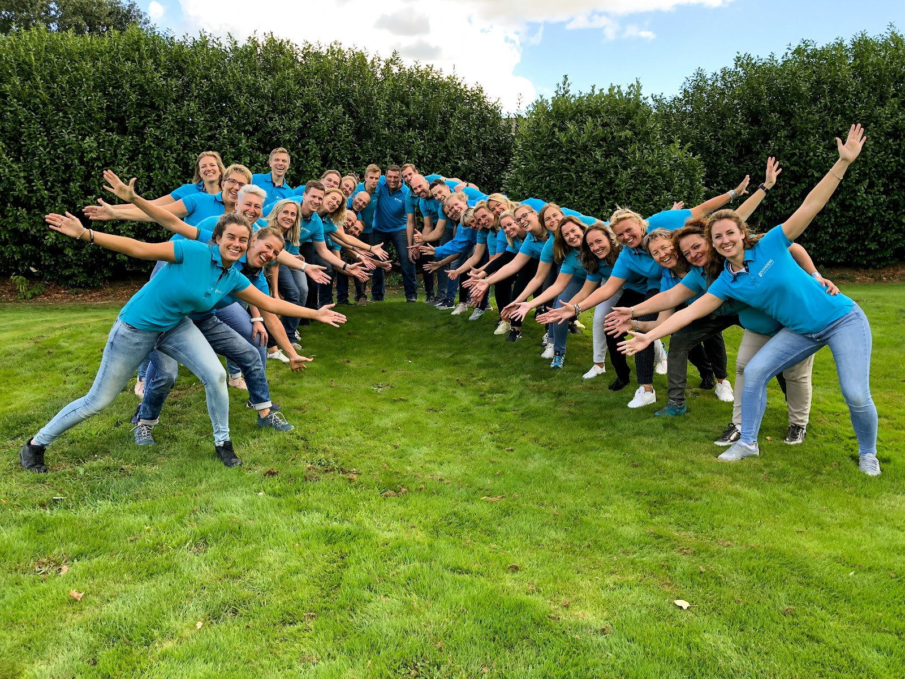
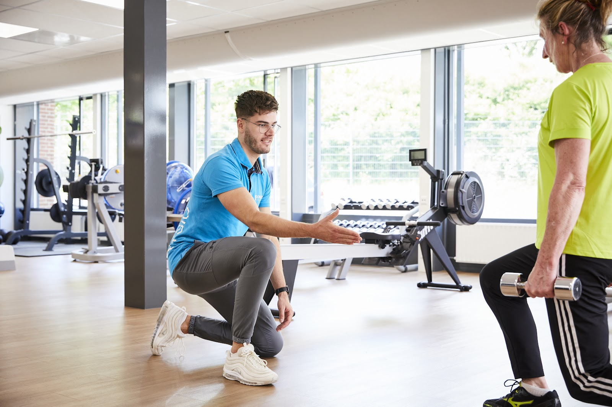
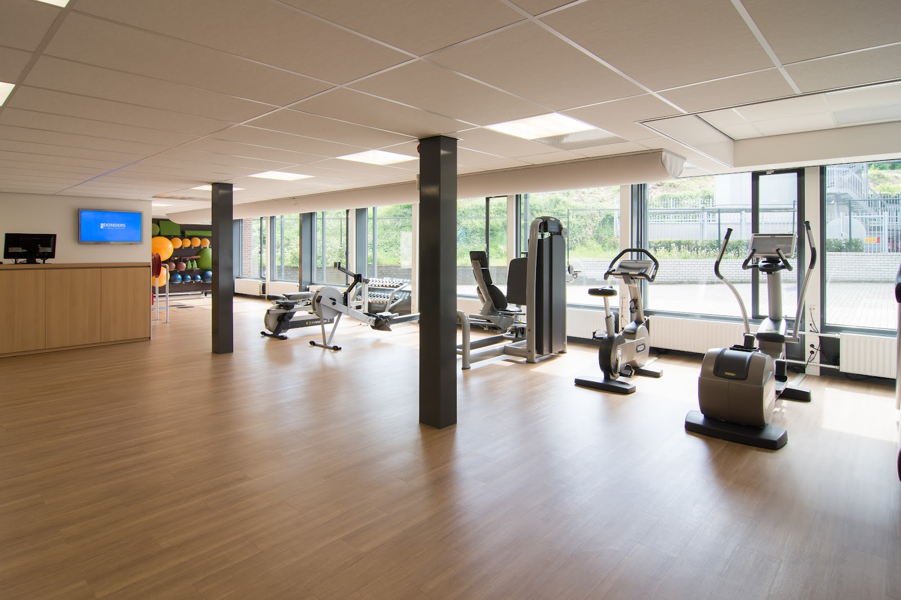

Fysiotherapie in Arnhem en Velp
Nu pijn? Deze week nog geholpen.
Loop van maandag tot en met zaterdag binnen op ons gratis inloopspreekuur. U heeft geen verwijzing van de huisarts nodig. Een fysiotherapeut bekijkt uw klacht en zegt eerlijk welke aanpak past.
- 4,7 / 5
- 582 reviews
- Ervaring
- 40+
- jaar in Arnhem
- Geholpen
- 23.000+
- mensen

Ook 's avonds en op zaterdag.
Weet u nog niet welke behandeling bij uw klacht past? Bespreek het vrijblijvend tijdens het gratis inloopspreekuur, van maandag tot en met zaterdag. Zonder verwijsbrief en zonder dat u direct kosten maakt.
Bel voor het inloopspreekuurOpeningstijden praktijk
-
Maandag
08:00 tot 21:00
-
Dinsdag
07:00 tot 21:00
-
Woensdag
08:00 tot 21:00
-
Donderdag
07:00 tot 21:00
-
Vrijdag
07:30 tot 17:00
-
Zaterdag
08:00 tot 13:00
-
Zondag
Gesloten
Waar heeft u last van?
We kijken niet alleen naar waar het pijn doet, maar ook naar hoe de klacht is ontstaan, hoe u beweegt en wat u weer wilt kunnen. Binnen het team zijn specialisten per lichaamsdeel, zodat u bij de juiste persoon terechtkomt.
Behandelvormen
- Fysiotherapie
- Manuele therapie
- Dry needling
- Triggerpoint therapie
- Sportfysiotherapie
- Shockwave
- Acupunctuur
- Echografie
- Orofaciale fysiotherapie
- Oefentherapie Cesar
- Nek en hoofd onder andere whiplash, nekhernia en duizeligheid (BPPD)
- Rug
- Schouder
- Elleboog
- Hand en pols
- Heup, bekken en bovenbeen
- Knie
- Voet, enkel en onderbeen

Zo gaat het in de praktijk.
-
1
U bespreekt uw klacht
Tijdens het gratis inloopspreekuur of via een afspraak. Een verwijzing is niet nodig.
-
2
Eerste onderzoek
We brengen uw klacht, beweging en belastbaarheid in kaart en bespreken welke aanpak bij uw situatie past.
-
3
Behandeling en oefenen
Fysiotherapie, manuele therapie, dry needling of een andere vorm. Waar nodig kijken meerdere specialisten mee.
44 collega's, samen onder één dak.
Fysiotherapeuten met verschillende specialisaties. Zo zoeken we gericht naar de juiste expertise voor uw klacht.

Onder andere
Bert Donders
Fysiotherapeut, manueel therapeut, rug- en nekspecialist, dry needling
Annemiek Varkevisser
Fysiotherapeut, manueel therapeut, rug- en nekspecialist, heupspecialist
Thijs Steffen
Fysiotherapeut, manueel therapeut, schouderspecialist, rug- en nekspecialist, dry needling
Ulrike Wullner
Fysiotherapeut, acupuncturist, dry needling, myofasciale klachten, hoofdpijn en duizeligheid
Sanne Steffek
Fysiotherapeut, shockwavetherapeut, neurologie, dry needling, echografie
Lars Meijer
Fysiotherapeut, schouderspecialist, spier- en peesspecialist, dry needling
Valerie van Dam
Fysiotherapeut, dry needling, shockwave
Charlotte Braun
Fysiotherapeut, orofaciaal fysiotherapeut, dry needling
Kristel Wanders
Oefentherapeut Cesar
Wat patiënten zeggen.
4,7 gemiddeld uit 582 Google-reviews
"Deskundige behandeling gehad. De fysio was duidelijk in haar communicatie; oefeningen voor thuis zijn per mail door haar gedeeld. De praktijkruimte bood voldoende privacy en was geschikt om diverse oefeningen te doen. Kortom: een aanrader!"
"De professionele aanpak, deskundigheid en betrokkenheid gedurende mijn behandeling. De persoonlijke aandacht en duidelijke uitleg heb ik als zeer prettig ervaren en hebben mij geholpen in mijn herstelproces."
"Uiterst adequaat en deskundig geholpen. Je moet wel structureel de oefeningen doen, maar dan komt het ook goed!"
"Uitstekend geholpen door Joe ( Osteopaat) ; luistert heel goed naar de klachten die je aangeeft waardoor een adequate behandeling plaatsvindt."


Beter worden doet u ook zelf.
In onze eigen oefenzaal werkt u onder begeleiding aan uw herstel, en daarna aan een langdurig gezonde leefstijl. De fitness is elke dag open van 06:00 tot 23:00.